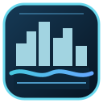

01 / PERFORMANCE
ANPASSBARGrafikprofil
Wähle die Bildqualität für den nächsten Spielstart. Auf schwächeren PCs empfiehlt sich „Ausgeglichen“.
Ausgeglichen · gute Mischung aus Bildqualität und Leistung.

Erkunde die Stadt, entdecke neue Orte und schreibe deinen eigenen Alltag zwischen Skyline, Straßen und Vororten.
WINDOWS · LOKALE EINSTELLUNGEN · DESKTOP PREVIEWWähle die Bildqualität für den nächsten Spielstart. Auf schwächeren PCs empfiehlt sich „Ausgeglichen“.